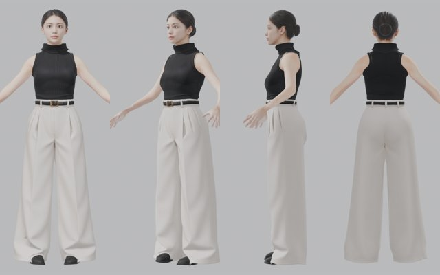
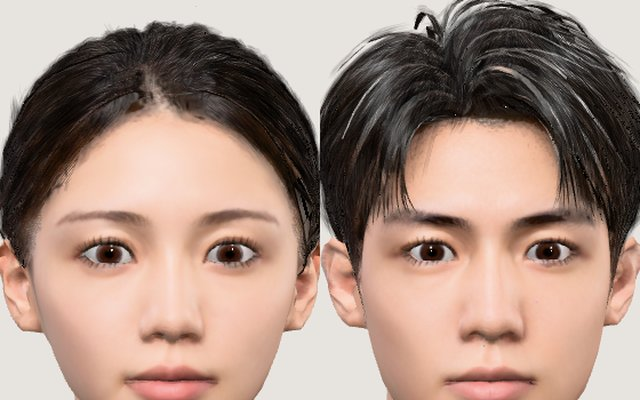
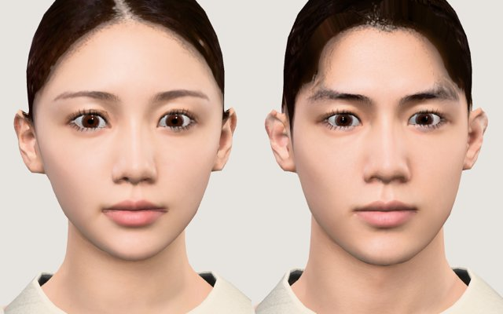
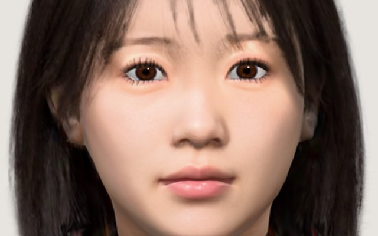

360toAvatar Lab
1 枚の絵 → 360 度の周回動画 → 3D アバター、の実験置き場。モデルは数十 MB あるので、開いてから表示まで少しかかります。

2026-10-29
服を着た全身（歩き）
Tripo で作った服（ニットと白いパンツ）を素体に合わせて着せた VRM。その場で歩かせることもできる。照明は Blender の確認画像と同じスタジオ光。

2026-10-26
変身（髪ごと）
まとめ髪の女性から短髪の男性へ。顔は頂点で補間、形の違う髪は頭皮に乗ったまま溶けて入れ替わり、変身後も揺れる。髪は毛流れのツヤと毛束付き。

2026-10-25
変身
ボタン 1 つで別人の顔へうねりながら変わる。同じ素体に合わせた 2 つの顔の間を、頂点とテクスチャで補間。

2026-10-22
パーフェクトシンク＋髪の Gaussian
ARKit の 52 表情を持つ VRM。Web カメラのフェイストラッキングとリップシンクで動かせる。髪は 3D Gaussian。